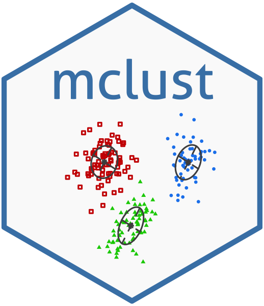
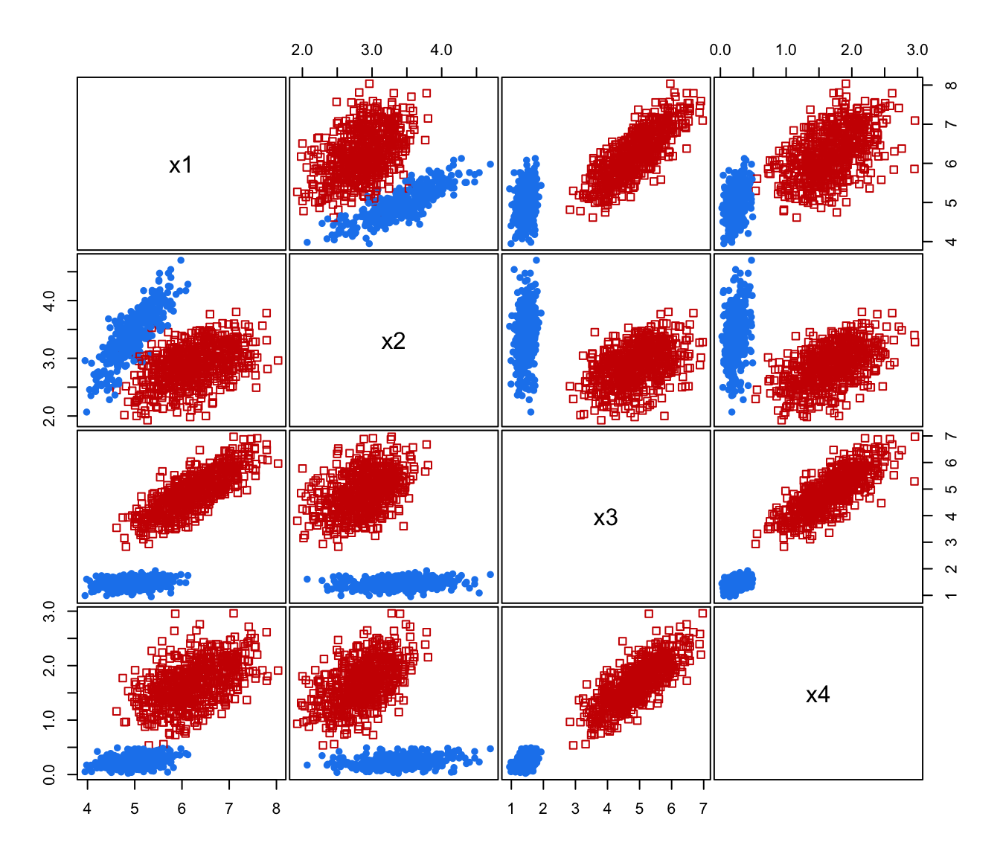
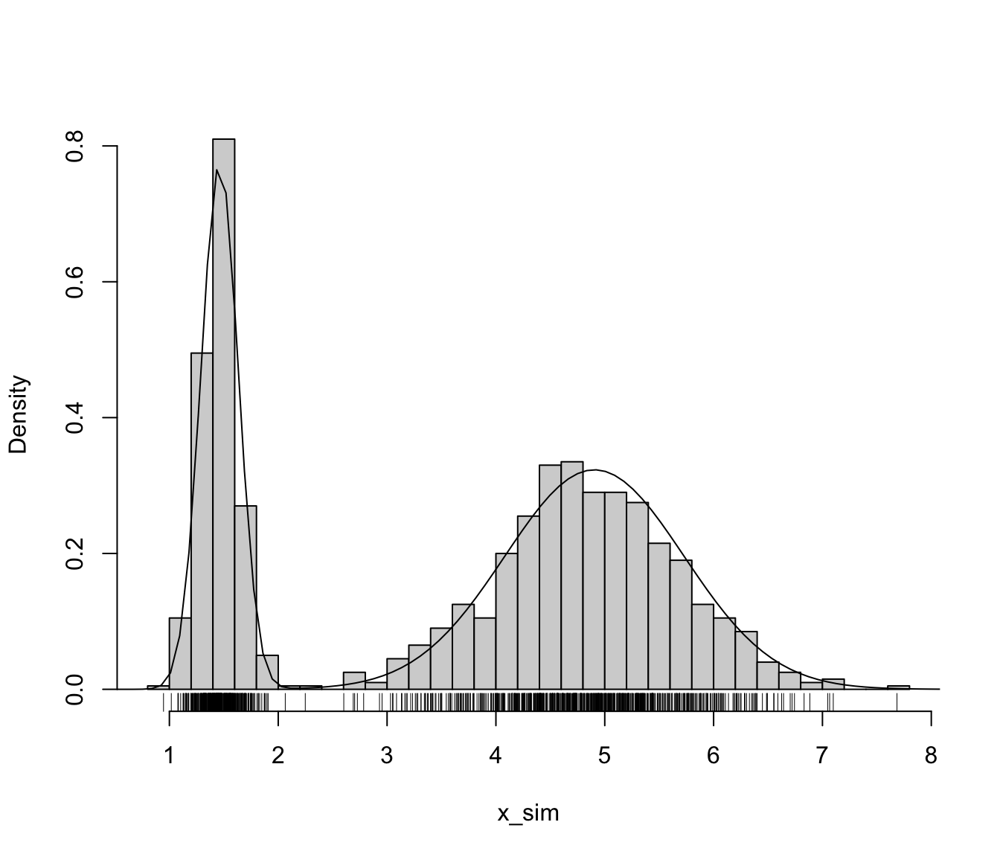

Simulate from Gaussian mixture models
simulate.RdGeneric method for simulating from Gaussian mixture models via base `simulate()` function.
Arguments
- object
An object of either `Mclust` or `densityMclust` class.
- nsim
An integer specifying the number of data points to be simulated.
- seed
An optional integer argument to
set.seedfor reproducible random class assignment. By default the current seed will be used. Reproducibility can also be achieved by callingset.seedbefore callingsim.- ...
Catches unused arguments in indirect or list calls via
do.call.
Value
For an input object of class `Mclust` returns a matrix in which the first column is the mixture component label and the remaining columns are the simulated data observations. For an input object of class `densityMclust` only the simulated data observations are returned.
See also
simulate,
sim, ...,
Mclust,
densityMclust
Examples
mod <- Mclust(iris[,-5])
iris_sim <- simulate(mod, n = 1000)
str(iris_sim)
#> num [1:1000, 1:5] 2 1 1 2 2 2 1 2 2 1 ...
#> - attr(*, "dimnames")=List of 2
#> ..$ : NULL
#> ..$ : chr [1:5] "group" "x1" "x2" "x3" ...
clPairs(iris_sim[,-1], iris_sim[,1])

x <- iris$Petal.Length
mod <- densityMclust(x, plot = FALSE)
x_sim <- simulate(mod, n = 1000)
str(x_sim)
#> num [1:1000, 1] 4.4 5.08 5.78 1.31 1.31 ...
#> - attr(*, "dimnames")=List of 2
#> ..$ : NULL
#> ..$ : chr "1"
hist(x_sim, breaks = 31, main = NULL, probability = TRUE)
rug(x_sim)
x0 = seq(0.5, 9, length = 101)
lines(x0, predict(mod, newdata = x0))
